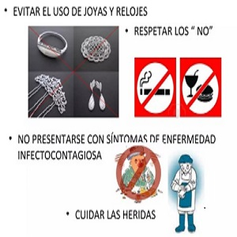

EJEMPLOS DE BUENAS PRACTICAS
- Higiene y limpieza:
Mantener un entorno de trabajo limpio y libre de contaminantes es esencial. Esto incluye la limpieza de las áreas de producción y el uso de ropa y equipos adecuados. - Control de calidad:
Establecer procedimientos para el control de calidad en cada etapa de producción para garantizar que las bolsas cumplan con los estándares de calidad. - Seguridad del producto:
Asegurarse de que las bolsas fabricadas sean seguras para su uso previsto y no contengan materiales o sustancias dañinas. - Trazabilidad:
Llevar registros detallados de materias primas, procesos de fabricación y distribución para poder rastrear los productos en caso de problemas. - Capacitación del personal:
Capacitar al personal en las BPM y asegurarse de que estén al tanto de las prácticas seguras de fabricación. - Almacenamiento adecuado:
Almacenar las materias primas y productos terminados de manera adecuada para prevenir daños, contaminación o deterioro. - Etiquetado:
Etiquetar claramente las bolsas con información relevante, como el tipo de material, instrucciones de uso y advertencias. - Documentación:
Mantener registros precisos de todos los procesos de fabricación y de cualquier problema o desviación de las BPM. - Manejo de residuos:
Gestionar adecuadamente los residuos generados durante el proceso de fabricación de bolsas, de acuerdo con las regulaciones ambientales. - Mejora continua:
Buscar constantemente formas de mejorar los procesos y la calidad de los productos.
